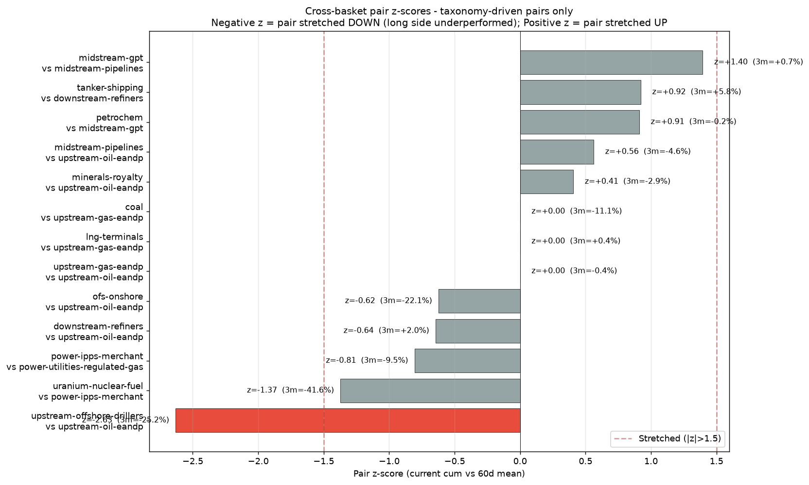
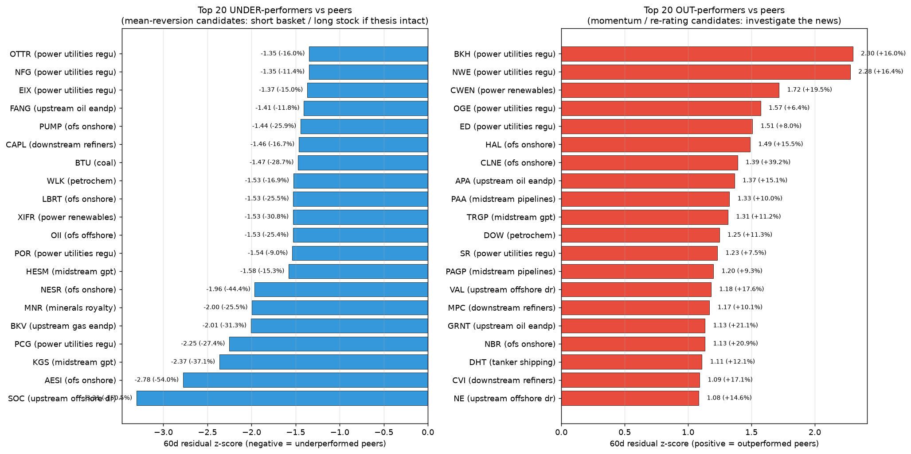
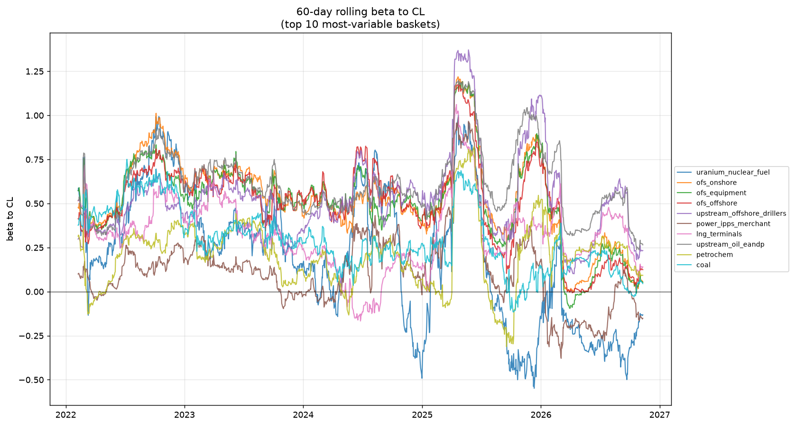
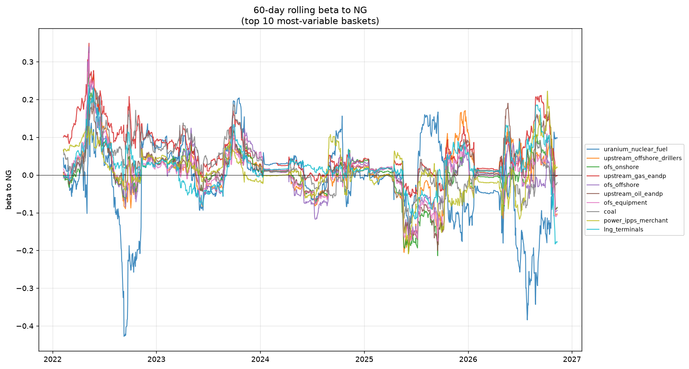
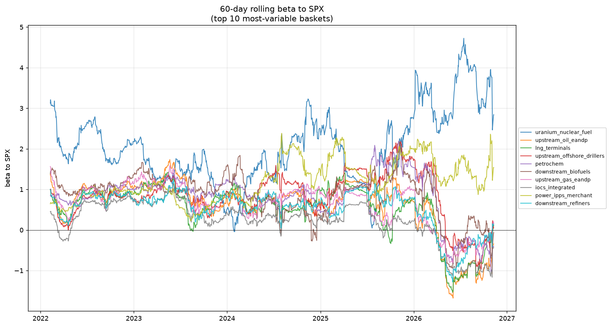
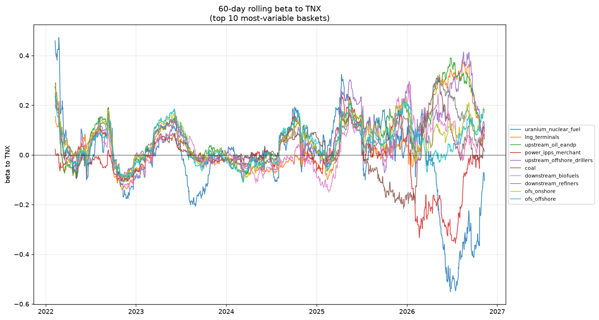

Daily returns, 5y, 60d rolling windows where applicable

| Long | Short | Thesis | z (60d) | 1y corr | 1m | 3m | Vol (ann) |
|---|---|---|---|---|---|---|---|
| upstream_offshore_drillers | upstream_oil_eandp | Offshore renaissance vs onshore | -2.63 | 0.69 | -13.8% | -25.2% | 27.5% |
| midstream_gpt | midstream_pipelines | Wellhead activity vs long-haul | +1.40 | 0.78 | +0.1% | +0.7% | 12.8% |
| uranium_nuclear_fuel | power_ipps_merchant | Nuclear fuel vs nuclear power | -1.37 | 0.54 | -12.8% | -41.6% | 61.8% |
| tanker_shipping | downstream_refiners | Crude/product shipping vs refining | +0.92 | 0.23 | +0.6% | +5.8% | 33.3% |
| petrochem | midstream_gpt | Petchem demand vs NGL feedstock supply | +0.91 | 0.22 | +12.5% | -0.2% | 29.4% |
| power_ipps_merchant | power_utilities_regulated_gas | Merchant power AI thesis | -0.81 | 0.17 | -14.6% | -9.5% | 36.4% |
| downstream_refiners | upstream_oil_eandp | Long refining margin (crack spread) | -0.64 | 0.58 | -9.8% | +2.0% | 26.2% |
| ofs_onshore | upstream_oil_eandp | Service intensity vs E&P capex | -0.62 | 0.59 | -0.9% | -22.1% | 21.9% |
| midstream_pipelines | upstream_oil_eandp | Fee-based vs commodity exposure | +0.56 | 0.63 | +5.6% | -4.6% | 26.5% |
| minerals_royalty | upstream_oil_eandp | Royalty (no opex) vs operating E&P | +0.41 | 0.80 | +1.2% | -2.9% | 20.5% |
| upstream_gas_eandp | upstream_oil_eandp | Gas vs oil commodity exposure | +0.00 | 0.69 | +9.1% | -0.4% | nan% |
| lng_terminals | upstream_gas_eandp | LNG terminal margin vs gas producer | +0.00 | 0.52 | +0.1% | +0.4% | nan% |
| coal | upstream_gas_eandp | Coal-gas substitution in power | +0.00 | 0.33 | -12.2% | -11.1% | nan% |

| Ticker | Name | Node | z 60d | cum resid | β to basket | R² | |
|---|---|---|---|---|---|---|---|
| ↓ | SOC | Sable Offshore | upstream_offshore_drillers | -3.31 | -150.5% | 0.42 | 0.04 |
| ↓ | AESI | Atlas Energy Solutions | ofs_onshore | -2.78 | -54.0% | 1.01 | 0.44 |
| ↓ | KGS | Kodiak Gas Services | midstream_gpt | -2.37 | -37.1% | 1.30 | 0.39 |
| ↓ | PCG | PG&E Corporation | power_utilities_regulated_gas | -2.25 | -27.4% | 0.97 | 0.29 |
| ↓ | BKV | BKV Corporation | upstream_gas_eandp | -2.01 | -31.3% | 1.04 | 0.48 |
| ↓ | MNR | Mach Natural Resources | minerals_royalty | -2.00 | -25.5% | 0.67 | 0.20 |
| ↓ | NESR | National Energy Services Reunited | ofs_onshore | -1.96 | -44.4% | 0.74 | 0.26 |
| ↓ | HESM | Hess Midstream | midstream_gpt | -1.58 | -15.3% | 0.83 | 0.47 |
| ↓ | POR | Portland General Electric | power_utilities_regulated_gas | -1.54 | -9.0% | 1.05 | 0.67 |
| ↓ | OII | Oceaneering International | ofs_offshore | -1.53 | -25.4% | 1.00 | 0.55 |
| ↓ | XIFR | XPLR Infrastructure (ex-NEP) | power_renewables | -1.53 | -30.8% | 0.87 | 0.24 |
| ↓ | LBRT | Liberty Energy | ofs_onshore | -1.53 | -25.5% | 1.17 | 0.63 |
| ↓ | WLK | Westlake Corp | petrochem | -1.53 | -16.9% | 0.93 | 0.63 |
| ↓ | BTU | Peabody Energy | coal | -1.47 | -28.7% | 1.27 | 0.56 |
| ↓ | CAPL | CrossAmerica Partners | downstream_refiners | -1.46 | -16.7% | 0.24 | 0.11 |
| Ticker | Name | Node | z 60d | cum resid | β to basket | R² | |
|---|---|---|---|---|---|---|---|
| ↑ | BKH | Black Hills Corporation | power_utilities_regulated_gas | +2.30 | +16.0% | 1.06 | 0.60 |
| ↑ | NWE | NorthWestern Energy | power_utilities_regulated_gas | +2.28 | +16.4% | 0.95 | 0.53 |
| ↑ | CWEN | Clearway Energy | power_renewables | +1.72 | +19.5% | 0.67 | 0.43 |
| ↑ | OGE | OGE Energy | power_utilities_regulated_gas | +1.57 | +6.4% | 1.03 | 0.80 |
| ↑ | ED | Consolidated Edison | power_utilities_regulated_gas | +1.51 | +8.0% | 0.94 | 0.67 |
| ↑ | HAL | Halliburton | ofs_onshore | +1.49 | +15.5% | 0.86 | 0.71 |
| ↑ | CLNE | Clean Energy Fuels | ofs_onshore | +1.39 | +39.2% | 0.71 | 0.19 |
| ↑ | APA | APA Corporation | upstream_oil_eandp | +1.37 | +15.1% | 1.17 | 0.78 |
| ↑ | PAA | Plains All American | midstream_pipelines | +1.33 | +10.0% | 1.03 | 0.64 |
| ↑ | TRGP | Targa Resources | midstream_gpt | +1.31 | +11.2% | 1.24 | 0.70 |
| ↑ | DOW | Dow Inc | petrochem | +1.25 | +11.3% | 0.88 | 0.71 |
| ↑ | SR | Spire | power_utilities_regulated_ldc | +1.23 | +7.5% | 0.99 | 0.66 |
| ↑ | PAGP | Plains GP Holdings | midstream_pipelines | +1.20 | +9.3% | 1.05 | 0.63 |
| ↑ | VAL | Valaris | upstream_offshore_drillers | +1.18 | +17.6% | 0.97 | 0.62 |
| ↑ | MPC | Marathon Petroleum | downstream_refiners | +1.17 | +10.1% | 0.88 | 0.73 |
Baskets whose current 60d rolling beta is more than 2σ from its long-run mean. May indicate structural shift in driver sensitivity.
| Driver | Basket | Current β | LR mean β | Z-score | Direction |
|---|---|---|---|---|---|
| NG | lng_terminals | -0.18 | +0.02 | -3.58 | decreased |
| NG | downstream_refiners | -0.14 | +0.00 | -3.27 | decreased |
| NG | midstream_pipelines | -0.07 | +0.01 | -2.67 | decreased |
| NG | downstream_retail | -0.09 | -0.00 | -2.51 | decreased |
| NG | tanker_shipping | -0.13 | +0.00 | -2.45 | decreased |
| SPX | petrochem | -0.40 | +0.83 | -2.13 | decreased |
| NG | iocs_integrated | -0.09 | +0.00 | -2.11 | decreased |



